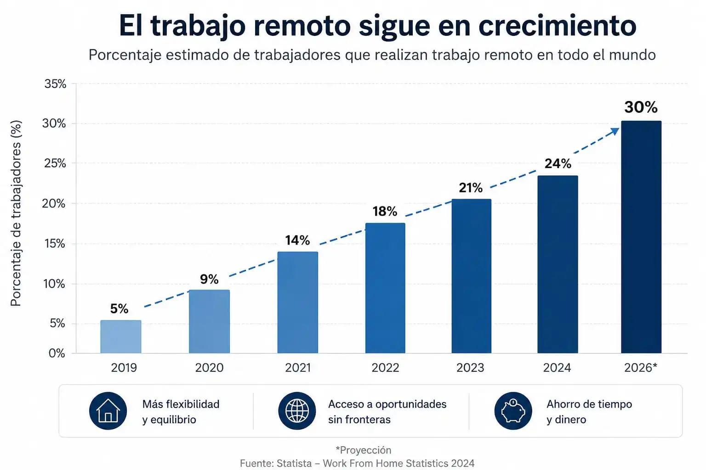

E l trabajo remoto es una de las opciones más atractivas en el mercado laboral, sin embargo hay que tener en cuenta varios aspectos que no siempre se dicen al momento en el que alguien decide tomar ese camino a ojos cerrados.
La popularidad de este modelo laboral está en crecimiento porque ofrece mayor flexibilidad, acceso a oportunidades internacionales y la posibilidad de desempeñar funciones desde distintos lugares.
Como resultado, cada vez más trabajadores y empresas consideran el trabajo remoto como una alternativa viable a los esquemas tradicionales. Esta tendencia también se observa a nivel mundial.
Diversos estudios internacionales muestran que el teletrabajo se ha consolidado como parte habitual de la vida laboral moderna, con millones de profesionales realizando una parte significativa de su jornada desde casa.

Como resultado, cada vez más trabajadores y empresas consideran el trabajo remoto como una alternativa viable a los esquemas tradicionales.
Siendo así, sus beneficios no son universales. Aunque puede mejorar la calidad de vida y ampliar las opciones profesionales, también plantea desafíos relacionados con la productividad, la comunicación y la organización personal.
Por ello, es importante analizar tanto sus ventajas como sus desventajas antes de decidir si realmente vale la pena en 2026.
- 1. ¿Cómo consiguen empleo las personas que trabajan de forma remota?
- 2. ¿Qué es el trabajo remoto y por qué cada vez más personas lo buscan?
- 3. 10 Plataformas para Encontrar Trabajo Remoto en 2026
- 4. ¿Cuáles son las desventajas del trabajo remoto?
- 5. Ventajas de trabajar remoto en 2026
- 6. ¿Qué trabajos remotos tienen más demanda en 2026?
- 7. ¿El trabajo remoto paga más? Comparativa de costos, tiempo e ingresos
- 8. ¿Vale la pena trabajar remoto en 2026?
- 9. ¿Es el trabajo remoto la mejor opción para ti?
¿Cómo consiguen empleo las personas que trabajan de forma remota?
Sí, es posible trabajar de forma remota, aunque la manera de conseguirlo puede variar según la profesión y la experiencia de cada persona.
Algunas personas son contratadas directamente por empresas que permiten desempeñar las funciones a distancia, mientras que otras trabajan de forma independiente ofreciendo sus servicios a distintos clientes.
En ambos casos, el objetivo es el mismo: realizar las tareas sin necesidad de acudir físicamente a una oficina.
Para acceder a una oportunidad de trabajo remoto, normalmente es necesario contar con ciertas habilidades, experiencia en un área específica y conocimientos básicos de herramientas digitales para comunicarse y colaborar en línea.
Muchas personas encuentran este tipo de empleo a través de portales de trabajo, redes profesionales o recomendaciones, aunque también existen quienes construyen su propia cartera de clientes y trabajan por cuenta propia.
Por esta razón, el trabajo remoto no está limitado únicamente a freelancers o trabajadores independientes.
Actualmente, miles de empresas contratan empleados remotos a tiempo completo o parcial para desempeñar funciones en áreas como atención al cliente, programación, diseño, marketing, redacción, ventas, soporte técnico y muchas otras.
Lo importante es demostrar que se pueden cumplir los objetivos y responsabilidades sin importar la ubicación física desde la que se trabaje.
Entre los empleos remotos más demandados por las empresas actualmente se encuentran:
- Atención al cliente: resolver consultas, gestionar reclamos y brindar soporte a usuarios.
- Asistente virtual: organizar agendas, responder correos y realizar tareas administrativas.
- Redactor de contenidos: crear artículos, guías, publicaciones y textos para sitios web.
- Diseñador gráfico: desarrollar piezas visuales para marcas, campañas y redes sociales.
- Community Manager: administrar perfiles en redes sociales e interactuar con la audiencia.
- Especialista en marketing digital: gestionar campañas publicitarias y estrategias de crecimiento online.
- Programador o desarrollador web: crear, mantener y optimizar aplicaciones y sitios web.
- Soporte técnico: ayudar a usuarios y empresas a solucionar problemas tecnológicos.
- Analista de datos: interpretar información para apoyar la toma de decisiones empresariales.
- Traductor: adaptar documentos, contenidos y comunicaciones entre diferentes idiomas.
- Ejecutivo de ventas: captar clientes, realizar seguimiento de oportunidades y cerrar negocios.
- Profesor o tutor en línea: impartir clases, asesorías o capacitaciones a través de internet.
Aunque estas son algunas de las opciones más comunes, la cantidad de profesiones que pueden desempeñarse de forma remota sigue creciendo a medida que las empresas adoptan herramientas digitales y modelos de trabajo más flexibles.
¿Qué es el trabajo remoto y por qué cada vez más personas lo buscan?
El trabajo remoto es una modalidad laboral que permite eliminar cargas extras y facilitar actividades profesionales fuera de una oficina tradicional mediante el uso de internet y herramientas digitales.
Durante la evolución tecnológica, miles de empresas han descubierto que muchas funciones pueden ejecutarse desde cualquier lugar sin afectar los resultados.
Durante los últimos años estas implementaciones han dejado de ser exclusivas de sectores tecnológicos. Hoy es posible encontrar vacantes remotas en áreas como atención al cliente, marketing, diseño, ventas, administración, educación e incluso servicios financieros.
Las previsiones apuntan a que esta tendencia seguirá expandiéndose durante los próximos años.
De acuerdo con el Foro Económico Mundial, para 2030 existirán alrededor de 92 millones de empleos digitales que podrán realizarse de forma remota desde cualquier lugar del mundo, lo que refleja el creciente papel que esta modalidad tendrá en el mercado laboral global.

5 errores financieros que terminaron costando verdaderas fortunas
¿Te gustaría aprovechar una de estas oportunidades?
Mi intención es decirte desde el principio cuál es la realidad y, por eso, quiero explicarte lo siguiente: es importante aclarar que conseguir un trabajo remoto no siempre es un proceso sencillo ni inmediato.
Aunque existen numerosas oportunidades disponibles, muchas empresas buscan candidatos que puedan demostrar experiencia previa, habilidades específicas o resultados comprobables en su área de trabajo.
Y en muchos casos, las empresas suelen priorizar candidatos con experiencia previa o habilidades demostrables.
Con frecuencia, quienes obtienen estas oportunidades son personas que ya llevan tiempo dentro de la organización y reciben ese beneficio gracias a la trayectoria y confianza que han construido.
En algunos casos, también pueden solicitar un portafolio, referencias profesionales o ejemplos de proyectos realizados anteriormente.
Por esta razón, quienes desean acceder a este tipo de empleo suelen necesitar tiempo para desarrollar competencias, adquirir experiencia y construir una trayectoria que genere confianza en posibles empleadores o clientes.
El trabajo remoto representa una oportunidad real para muchas personas, pero generalmente requiere preparación, constancia y la capacidad de demostrar resultados de manera profesional.
Así que no, no ocurre de la noche a la mañana. Aunque esta modalidad esté en auge y parezca que todo el mundo está entrando en ella, la realidad es que muchas de las personas que hoy trabajan de este modo llevan años desarrollando su actividad y perfeccionando sus habilidades.
Sin embargo, el panorama para quien desea comenzar no debería ser desalentador. No todos parten desde las mismas circunstancias, y empezar hoy puede marcar una gran diferencia dentro de dos años si se aprovecha ese tiempo para prepararse y adquirir experiencia.
10 Plataformas para Encontrar Trabajo Remoto en 2026
Si estás interesado en encontrar una oportunidad de trabajo remoto, existen diversas plataformas especializadas que conectan a empresas con profesionales de todo el mundo.
Algunas son completamente gratuitas para los candidatos, mientras que otras ofrecen planes de pago opcionales con funciones adicionales.
- LinkedIn: una de las redes profesionales más utilizadas del mundo. Permite buscar empleos remotos, contactar reclutadores y construir una red de contactos. Gratuita, aunque cuenta con funciones premium opcionales.
- Indeed: portal de empleo con miles de ofertas remotas en diferentes sectores y países. Gratuita para quienes buscan empleo.
- FlexJobs: plataforma especializada en empleos remotos y flexibles. Verifica las ofertas para reducir estafas y publicaciones de baja calidad. De pago.
- Remote.co: sitio enfocado exclusivamente en oportunidades de trabajo remoto para profesionales de distintas áreas. Gratuita para candidatos.
- We Work Remotely: una de las bolsas de empleo remoto más populares a nivel internacional, especialmente en tecnología, marketing y atención al cliente. Gratuita para postulantes.
- Upwork: plataforma orientada principalmente a freelancers que buscan proyectos y clientes en todo el mundo. Gratuita para registrarse, aunque cobra comisiones sobre los trabajos realizados.
- Fiverr: permite ofrecer servicios profesionales en áreas como diseño, redacción, programación, marketing y edición de video. Gratuita para crear un perfil, con comisiones sobre las ventas.
- Remotive: portal especializado en empleos remotos internacionales con oportunidades en múltiples sectores. Gratuita para los candidatos.
- Working Nomads: recopila ofertas remotas de diferentes empresas y las organiza por categorías profesionales. Gratuita.
- Freelancer: plataforma global para trabajadores independientes que desean participar en proyectos de diversas áreas. Gratuita para registrarse, con opciones de pago y comisiones según el uso.
Nota: Aunque muchas de estas plataformas se encuentran en inglés, esto no suele representar un impedimento para la mayoría de las oportunidades.
En gran parte de los casos, las empresas están más interesadas en las habilidades, la experiencia y la capacidad de entregar resultados que en el idioma nativo del candidato.
Sin embargo, contar con conocimientos básicos de inglés puede ampliar significativamente el número de ofertas disponibles y facilitar la comunicación con empleadores internacionales.
¿Cuáles son las desventajas del trabajo remoto?
Aunque el trabajo remoto ofrece múltiples beneficios, también presenta retos que deben ser considerados antes de tomar una decisión profesional.
Dificultad para separar la vida personal y laboral
Uno de los problemas más frecuentes ocurre cuando el espacio de trabajo y el hogar se convierten en el mismo lugar. Muchas personas terminan respondiendo correos fuera de horario, atendiendo tareas durante sus momentos de descanso o extendiendo su jornada laboral sin darse cuenta.
Con el tiempo, esta situación puede generar agotamiento físico y mental, afectando la calidad de vida y reduciendo la satisfacción laboral.
Menor interacción social
Trabajar desde casa reduce considerablemente el contacto presencial con compañeros de trabajo. Aunque las videollamadas y plataformas de mensajería facilitan la comunicación, no siempre reemplazan la interacción humana cotidiana.
Para algunas personas esto no representa un problema, pero otras pueden experimentar sensación de aislamiento o desconexión con el equipo.
Mayor necesidad de disciplina
La autonomía es una ventaja importante del trabajo remoto, pero también implica una mayor responsabilidad personal. Sin supervisión directa, el trabajador debe administrar su tiempo, cumplir objetivos y mantener la productividad por iniciativa propia.
Las distracciones domésticas pueden convertirse en un obstáculo cuando no existe una rutina de trabajo bien definida.
Dependencia de la tecnología
El trabajo remoto depende completamente de la conexión a internet, dispositivos funcionales y herramientas digitales. Un problema técnico puede interrumpir reuniones, retrasar entregas o afectar la comunicación con clientes y empleadores.
Por esta razón, contar con una infraestructura tecnológica adecuada resulta indispensable.
Ventajas de trabajar remoto en 2026
A pesar de los desafíos, millones de profesionales continúan prefiriendo esta modalidad debido a los beneficios que ofrece tanto en el ámbito laboral como personal.
Ahorro de tiempo y dinero
Eliminar los desplazamientos diarios permite reducir gastos en transporte, combustible, alimentación fuera del hogar y otros costos asociados al trabajo presencial.
Además del ahorro económico, muchas personas recuperan varias horas cada semana que anteriormente dedicaban a desplazarse hacia una oficina.
Acceso a oportunidades laborales globales
Una de las mayores ventajas del trabajo remoto es la posibilidad de trabajar para empresas ubicadas en otras ciudades o países sin necesidad de mudarse.
Esto amplía considerablemente las oportunidades profesionales y permite competir en mercados laborales mucho más grandes que el entorno local.
Mayor flexibilidad laboral
Muchas empresas remotas valoran más los resultados que el cumplimiento estricto de horarios. Esto permite a los trabajadores organizar mejor su tiempo y adaptar su jornada a sus necesidades personales.
La flexibilidad puede mejorar el equilibrio entre la vida profesional y personal cuando se administra de manera adecuada.
Posibilidad de generar ingresos desde cualquier lugar
Mientras exista una conexión estable a internet, numerosas actividades profesionales pueden desarrollarse desde prácticamente cualquier ubicación.
Esta característica ha permitido que muchas personas trabajen mientras viajan, viven en ciudades más económicas o buscan una mejor calidad de vida.

Cómo ahorrar dinero sin cambiar tu estilo de vida ni dejar de vivir como te gusta
¿Qué trabajos remotos tienen más demanda en 2026?
El mercado laboral remoto continúa evolucionando y cada año aparecen nuevas oportunidades para trabajar desde casa. Lo que antes parecía reservado para programadores o profesionales de la tecnología, hoy se ha extendido a sectores mucho más amplios.
Actualmente, organizaciones de todos los tamaños contratan personal a distancia para funciones administrativas, comerciales, educativas, creativas y de atención al cliente. Gracias a las herramientas digitales, muchas tareas pueden realizarse desde cualquier lugar con una conexión a internet.
Aunque las habilidades tecnológicas siguen siendo muy valoradas, la experiencia, la capacidad de comunicación, la organización y la autonomía también se han convertido en factores clave para acceder a empleos remotos.
Entre los trabajos remotos más solicitados durante 2026 se encuentran:
- Asistente virtual.
- Representante de atención al cliente.
- Agente de ventas remotas.
- Auxiliar administrativo.
- Recepcionista virtual.
- Community Manager.
- Especialista en marketing digital.
- Redactor de contenidos.
- Copywriter.
- Diseñador gráfico.
- Editor de video.
- Gestor de comercio electrónico.
- Profesor o tutor online.
- Traductor.
- Reclutador de personal.
- Especialista en recursos humanos.
- Contador o auxiliar contable.
- Analista de datos.
- Desarrollador de software.
- Especialista SEO.
La demanda puede variar según el sector y la ubicación de la empresa, pero estas ocupaciones se encuentran entre las más frecuentes en las plataformas de empleo remoto y ofrecen oportunidades tanto para profesionales con experiencia como para personas que buscan iniciar una nueva carrera laboral desde casa.
25 Profesiones tradicionales que también permiten trabajar desde casa
- Contador o auxiliar contable.
- Abogado y asistente jurídico.
- Psicólogo con consultas virtuales.
- Profesor particular online.
- Asesor académico.
- Agente inmobiliario digital.
- Corredor de seguros.
- Nutricionista.
- Entrenador personal mediante videollamadas.
- Asistente médico administrativo.
- Secretaria virtual.
- Recepcionista virtual.
- Coordinador de proyectos.
- Supervisor de equipos remotos.
- Traductor.
- Corrector de textos.
- Consultor financiero.
- Asesor de viajes.
- Comprador o gestor de proveedores.
- Especialista en recursos humanos.
- Reclutador de personal.
- Agente de cobranza.
- Encuestador telefónico.
- Operador de servicio al cliente.
- Vendedor telefónico o comercial.
¿El trabajo remoto paga más? Comparativa de costos, tiempo e ingresos
Una de las preguntas más frecuentes es si trabajar de forma remota implica ganar menos dinero que en un empleo presencial.
Sin embargo, comparar únicamente el salario puede dar una visión incompleta de la realidad.
Para entender mejor la diferencia, imaginemos dos personas con funciones similares y un salario mensual de $1.500 dólares.
La única diferencia es que una trabaja desde casa y la otra debe desplazarse diariamente a una oficina.
| Factor | Trabajo Remoto | Trabajo Presencial |
|---|---|---|
| Salario mensual | $1.500 | $1.500 |
| Gastos de transporte | $0 | -$120 |
| Combustible o pasajes adicionales | $0 | -$60 |
| Almuerzos fuera de casa | $0 | -$150 |
| Ropa de oficina | Mínimo | Gasto recurrente |
| Tiempo diario de desplazamiento | 0 minutos | 90 minutos |
| Tiempo perdido al mes | 0 horas | 33 horas |
| Estrés por tráfico o transporte | Bajo | Moderado a alto |
| Ingreso disponible estimado | $1.500 | $1.170 |
En este ejemplo, ambas personas reciben exactamente el mismo salario. Sin embargo, quien trabaja desde casa conserva una mayor parte de sus ingresos y además recupera más de 30 horas al mes que de otro modo dedicaría a desplazamientos.
Esto no significa que el trabajo remoto sea siempre superior. Algunas personas prefieren la interacción social de una oficina, la separación física entre trabajo y vida personal o los beneficios adicionales que ofrecen ciertos empleadores presenciales.
No obstante, cuando se analizan conjuntamente el tiempo, los gastos asociados y la flexibilidad, muchas personas descubren que un empleo remoto puede resultar más rentable incluso cuando el salario es exactamente el mismo que el de un puesto presencial.
¿Vale la pena trabajar remoto en 2026?
Para muchas personas, la respuesta es sí. El trabajo remoto ofrece ventajas significativas relacionadas con la flexibilidad, el ahorro de tiempo y el acceso a oportunidades laborales globales.
Sin embargo, no todas las personas se adaptan de la misma manera. Algunas prefieren la estructura de una oficina tradicional y el contacto presencial con compañeros de trabajo.
La clave está en evaluar las necesidades individuales, el tipo de trabajo desempeñado y la capacidad para mantener la disciplina y la productividad sin supervisión constante.
¿Es el trabajo remoto la mejor opción para ti?
El trabajo remoto se ha consolidado como una de las modalidades laborales más importantes de la actualidad. Su crecimiento responde a cambios tecnológicos, nuevas dinámicas empresariales y una mayor demanda de flexibilidad por parte de los trabajadores.
Aunque presenta desafíos relacionados con la organización personal, la comunicación y la dependencia tecnológica, también ofrece beneficios que pueden mejorar significativamente la calidad de vida y ampliar las oportunidades profesionales.
Más que una tendencia pasajera, el trabajo remoto se ha convertido en una alternativa real para millones de personas. Antes de decidir si vale la pena, conviene analizar las ventajas y desventajas desde una perspectiva personal y profesional para determinar si esta modalidad encaja con los objetivos y necesidades de cada trabajador.

Opinión del autor
Francisco Urrego
¿Estás dispuesto a trabajar de forma remota y aún no te decides?
Después de investigar este tema y analizar las ventajas y desventajas del trabajo remoto, llegué a una conclusión bastante simple: para muchas personas puede representar una gran oportunidad, pero no necesariamente por las razones que suelen mencionarse.
La mayoría piensa en trabajar desde casa por la comodidad, el ahorro en transporte o la flexibilidad de horarios. Y aunque esos beneficios son reales, considero que el verdadero valor está en la posibilidad de acceder a oportunidades laborales que antes estaban limitadas por la ubicación geográfica.
Ahora bien, si hoy te dieran a elegir entre un empleo remoto y uno presencial, probablemente escogerías la opción que mejor se adapte a tu situación personal. Sin embargo, la realidad es que estas oportunidades no suelen aparecer de la noche a la mañana. En muchos casos son el resultado de años de experiencia, aprendizaje continuo y desarrollo profesional en un área específica.
Por eso no veo el trabajo remoto como una oportunidad que simplemente llega. Lo veo como una consecuencia natural de las habilidades que una persona ha construido con el tiempo. Cuanto más valor aportes en tu profesión, más posibilidades tendrás de acceder a empleos flexibles, mejor remunerados y con mayor libertad para decidir dónde trabajar.
En mi opinión, el objetivo no debería ser perseguir el trabajo remoto por sí mismo, sino desarrollar habilidades que te permitan elegir cómo quieres trabajar. Cuando eso ocurre, el trabajo remoto deja de ser un sueño lejano y se convierte en una opción real.
No todas las oportunidades remotas son empleos tradicionales
También creo que existe una idea equivocada sobre el trabajo remoto. Muchas personas imaginan que la única forma de conseguirlo es siendo contratadas por una empresa internacional o encontrando una vacante específica para trabajar desde casa.
Sin embargo, una gran parte de las oportunidades remotas nacen de forma independiente. Diseñadores, redactores, programadores, profesores, consultores, contadores, traductores e incluso personas con habilidades administrativas suelen comenzar ofreciendo sus servicios directamente a clientes, pequeños negocios o emprendedores sin depender de una contratación tradicional.
De hecho, en muchos casos el trabajo remoto no llega como una oferta laboral, sino como una consecuencia de la experiencia y las habilidades que una persona ya posee. Alguien que sabe resolver un problema puede encontrar clientes en internet, trabajar por proyectos o construir una fuente de ingresos propia sin necesidad de formar parte de una empresa de manera permanente.
Por eso considero que el trabajo remoto no debería verse únicamente como una búsqueda de empleo. También puede entenderse como una forma diferente de ejercer una profesión, donde el valor que aportas es más importante que el lugar desde donde trabajas.
Artículos relacionados:
¿Quieres leer artículos similares? Selecciona uno y haz clic en "Ir"